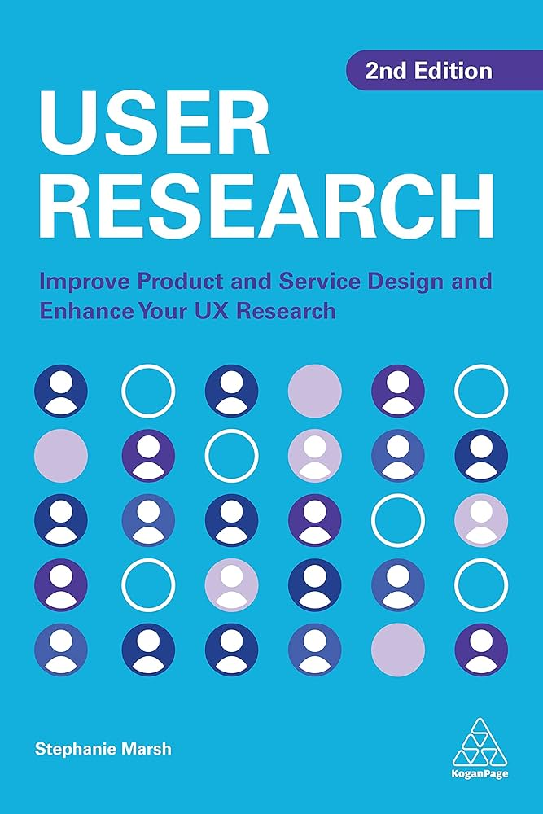
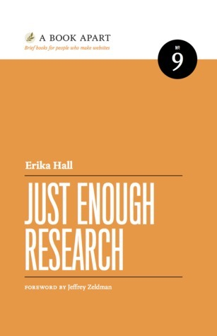
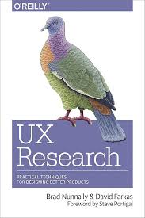

HCI2203 - أبحاث المستخدم
موقع المقرر
معلومات عامة عن المقرر
المحاضر: د. محمد جبلي
اسم المقرر: أبحاث المستخدم
رمز المقرر: HCI2203
البرنامج: بكالوريوس التفاعل بين الإنسان والحاسب
القسم: هندسة البرمجيات
الكلية: كلية الحوسبة
الجامعة: جامعة أم القرى
الساعات: 3
متطلب سابق: HCI1201
مخرجات التعلم (CLOs)
| # | المخرج | الرمز | أداة التقييم |
|---|---|---|---|
| 1 | التعرّف على طرق أبحاث المستخدم | K3 | واجبات، مشروع |
| 2 | تطبيق طرق مناسبة لأبحاث المستخدم | S1 | واجبات، مشروع |
| 3 | تحديد احتياجات المستخدم مع مراعاة اتجاهاته | S2 | واجبات، مشروع |
| 4 | التواصل مع فئات مختلفة من المستخدمين | S5 | واجبات، مشروع |
| 5 | الالتزام بالأخلاقيات والمعايير المهنية | V1 | واجبات، مشروع |
| 6 | اتخاذ قرارات تصميم مبنية على احتياجات المستخدم | V4 | واجبات، مشروع |
موضوعات المقرر
- مقدمة في أبحاث المستخدم
- تخطيط أبحاث المستخدم
- إجراء مقابلات المستخدم
- الدراسة الميدانية والبحث الإثنوغرافي
- اختبار قابلية الاستخدام والتقييم الإرشادي
- تصميم الاستبيانات
- تحليل البيانات النوعية
- تحليل البيانات الكمية
- تلخيص واستنتاج النتائج
- عرض وتوصيل النتائج
- أبحاث المستخدم ضمن التصميم التكراري
تقييم الطالب
| البند | الأسابيع | النسبة |
|---|---|---|
| الواجبات | 3–14 | 10% |
| المشروع | 3–14 | 30% |
| الميدتيرم | 7–8 | 20% |
| النهائي | 16–17 | 40% |
المراجع

User Research (2nd ed.)
Stephanie Marsh (2022)

Just Enough Research
Erika Hall

Nielsen Norman Group
مواد إلكترونية